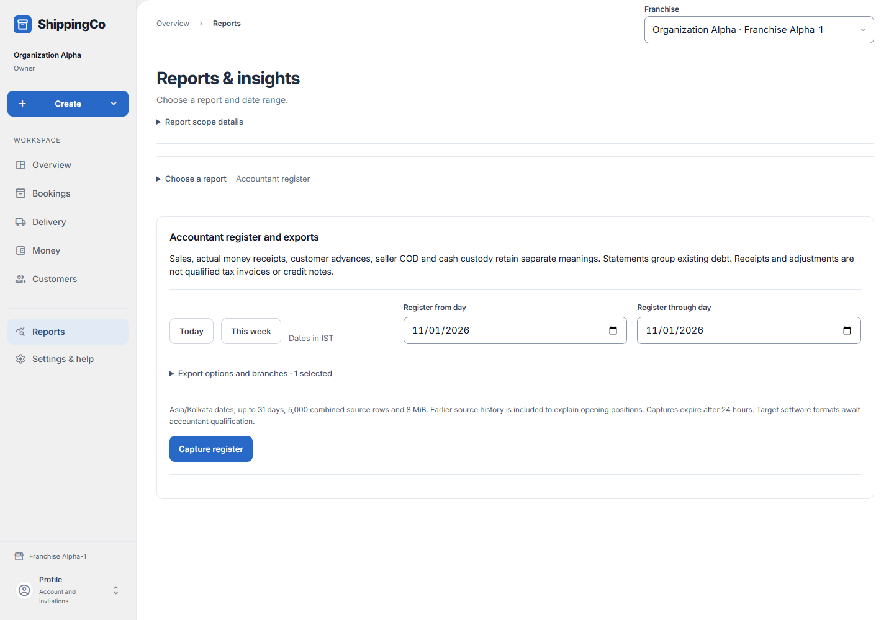

Accountant register
What this helps you do
- Capture source evidence and controls for your accountant.
Open this feature
- Reports > Choose a report > What should the accountant check?.
- Check the active branch first. Available actions depend on your role and the selected record.

Capture the register
- Choose Today, This week or inclusive Register from day and Register through day in Kolkata, up to 31 days.
- Expand Export options and branches only when needed. Select permitted franchises; the active branch stays included. Include private payment and approval references only when needed.
- Accounting format is Generic CSV v1; compatibility with external accounting software is not claimed. Select Capture register. A capture supports up to 5,000 combined source rows and 8 MiB and expires after 24 hours.
Inspect and export
- Choose Evidence family to narrow saved sources. Inspect saved source evidence shows exact values and correction evidence; Close source evidence returns to the list.
- Review Independent source controls: source and export totals should agree. View sources opens control evidence. Use source and control pagination for remaining rows.
- Download CSV bundle requires export permission; reading access alone does not grant it. Empty results retain headers and control definitions.
- Keep advances, seller COD, cash custody and allocations separate from sales. Statements group existing debt rather than creating another sale.
Fields and when to use them
These fields belong to the actions above. Complete the fields for your selected action; optional filters may stay blank.
- Register from day: Enter the register from day for this action, using the time zone shown. Use when shown for the selected action.
- Register through day: Enter the register through day for this action, using the time zone shown. Use when shown for the selected action.
- Accounting format: Select the accounting format involved in this action; check its account and responsible person. Use when shown for the selected action.
- Evidence family: Select the evidence family appropriate to the action explained above. Use when shown for the selected action.
If you need to retry
- No records: check branch, account or customer and filters. Use Load more where offered before deciding a record is missing.
- Invalid or missing value: read the form message, correct the draft, then review amounts and references again.
- Uncertain save: use the offered retry for the same request. Do not create a second payment, return, expense or application to guess whether the first saved.
- Changed evidence or policy: refresh current records and review them before a new request. A saved report retains its captured figures; create another report for current results.
About this guide
Checked against the current screen code on 1 November 2026. This explains app behaviour, not tax or accounting advice. Buttons and records can differ by role.